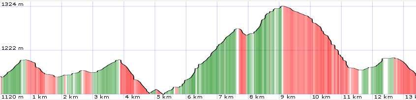
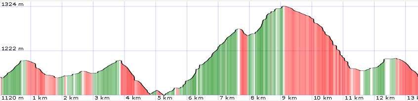

General Information
Map

| data fields | Note |
|---|---|
| number | 011 |
| suitable for |
|
| degree of difficulty |
|
| distance | 13 km |
| hiking time | 3h 30' |
| difference in altitude | 300 mt D+ And 300 mt D- |
| recommended period |
|
| Road surface | dirt road |

